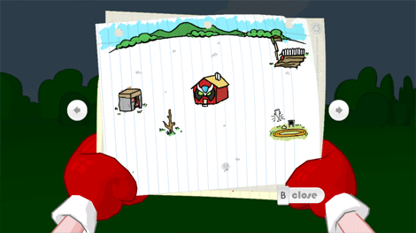
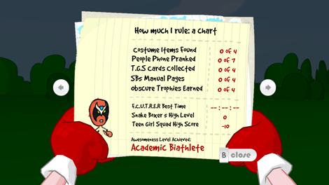
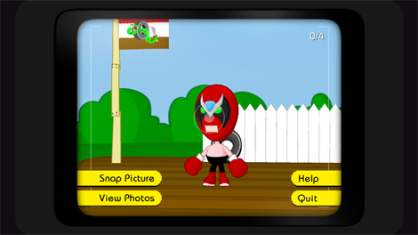

8 |
On-Screen Interface |
 |
While playing the game, you have access to:
 Strong Bad's inventory shows what Strong Bad is carrying. To use an item that's in the inventory, select it by pointing at it and pressing

The map shows the locations you can visit. New locations appear on the map throughout the game, so make sure to check it often! To go to a new place, point at the location you want to go and press 
Point at the arrows to the right and left of the map to shuffle through the other pages. Here you’ll see a chart that ranks Strong Bad’s awesomeness level (based on your achievements throughout the game) and a list of the collectables you’ve found scattered around the world. These items are not necessary to complete the game, but they can make it more fun, so keep an eye on these pages to make sure you’ve done everything there is to do! To return to the game, point at Close underneath the map and press

Photo mode allows you to take pictures at almost any time during the game. In photo mode you can perform the following functions:
You can share these pictures with people on your Wii Friends Roster using Strong Bad's laptop. |


 |
 |
 |